transcription of ☁️ Define Define
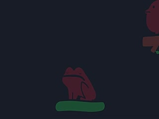
Welcome back to the Sand Pond Saga.
Let's get started.
Oh, Toad is asleep.
Maybe Bird could do the video instead.
Welcome back to the Sand Pond saga.
Look, what's wrong, Bird?
You don't want to do the video?
That's okay.
That's okay.
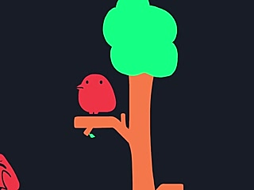
Let's find someone else instead.
In these videos, we use lots of
We use lots of complicated words.
But in this video, let's set the record straight.
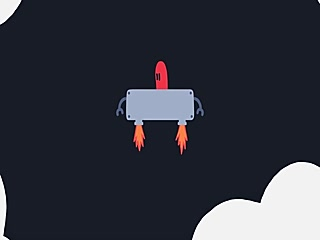
and define what they mean.
Welcome back to the Sandpond saga.
Let's get started.
First, let's define what a programming language is.
I speak English, UK edition.
Unfortunately, my computer does not,
but it does speak a bunch of programming languages that
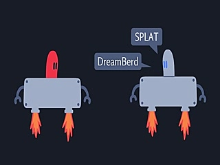
I also speak, like HTML, which I used to make this little game.
You have to catch all the birds, put them in a cage, and when you've done that, you get
a little victory screen.
Okay, I didn't just use HTML, that wouldn't work.
I used another programming language too, called CSS, to tell the
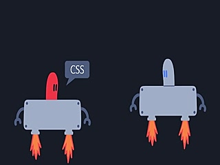
computer what to do. Sorry to interrupt, I'm editing the video right now and I've just
realized that HTML is not a real programming language. It's actually a markup language. So
when you use it, you're not actually programming, you're markuping instead. So a better example
would be a Turing complete program.
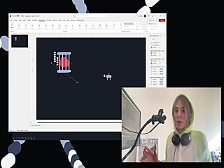
growing language, like Microsoft PowerPoint.
Let's define what a cellular automata is.
A cellular automator is where you have cells and you have rules.
The rules tell the cells what to do.
Sandlab is a new cellular automata that I made.
Cells follow rules to split, merge and change color.
change color.
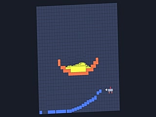
to simulate different elements.
Sorry to interrupt again. I'm editing the video and I've just found out that Sandlab is not actually a cellular automata. It's an agent-based model.
A better example would be something deterministic and fixed, like Tetris.
Sorry to interrupt again, but I've just found out that Tetris is also not a cellular automata.
It's a cellular automaton. A better example would be Tetris Multiplayer Multiplayer.
I'm glad.
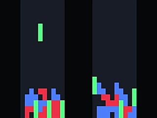
because it has multiple cellular automaton in it.
Sorry to interrupt again, but I'm realizing that these interruptions are making the video take too long.
So to speed things up, I decided to do the next two sections.
At the same time, let's define
intelligence.
Intelligence is something that dynamically preserves its pattern, and this pattern can take for many.
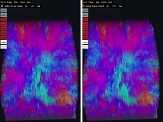
forms. Like Fish Lab. Fish Lab is an intelligence engine that I made. Fish can swing
swam forwards and turn up and down. They grow when they eat a circle and shrink when they eat a square.
When they get big enough, they split into two, causing everything about them to mutate,
including their brains, which control their own their own.
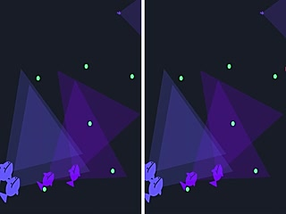
in intelligent behaviors.
Sorry to interrupt again, I'm editing the video right now and I've just realized that these fish are not an example of intelligence.
They're actually artificial intelligence.
Because they're just drawings.
Drawings.
Sorry to interrupt again, I'm editing the video right now
and I've just found out that they're not artificial intelligence either.
Because there's no way of telling if they have a consciousness.
They're not.
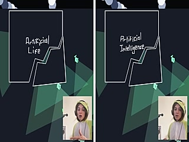
They're actually artificial, artificial intelligence.
Let's define fractal.
A fractal is a pattern with infinite detail.
No matter how far you zoom in, there's always more to discover.
An example of a fractal is a fractal because no matter how far you zoom in, no matter how much you break it down,
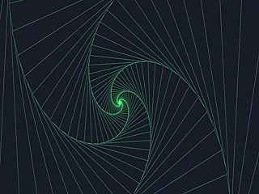
no matter how long you do this for.
Sorry to interrupt, I'm editing the video right now and I've just realized that a fractal is not a fractal.
It's actually a fractal. So a better example of a fractal would be a fractal.
Sorry to interrupt again, but I've just realized that a fractal is not a fractal. It's actually a fractal.
A better example of a fractal, a fractal, a better example of a fractal,
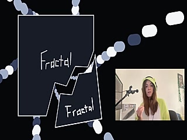
would be a fractal.
Sorry to interrupt again.
I've just realized that a fractal, well, it's not actually a fractal because if you break it down fully,
sorry to interrupt, it's actually a fractal.
Because it's not actually a fractal,
technically, because when you go in each interrupt, I've just realized that what you might keep going through that
is not actually a fractal.
Sorry, I've really realized that only found that information.
I think you're right.
Let's define our tool that we use to make
let's define art.
Art is a tool that we use to express ourselves and communicate.
Sometimes the art is a tool that you make,
tells us something about you.
Personally, I like to play little tunes on the baritone ukulele.
It's not meant to be heard by anyone, but it helps me to express how I'm feeling, and I find
it quite fun.
Sorry to interrupt, I'm editing, I'm editing the ukulele, and I'm just realized that playing that playing
the ukulele is not.
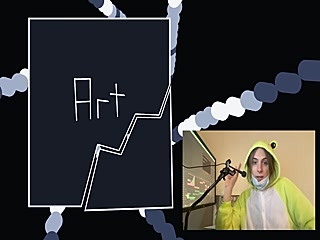
art. It's actually just annoying the neighbours. A real example of art is AI art. So I asked
GPT to make some prompts for me, which I gave to Dali and turned into an NFT. I put it on OpenC
and sold it for lots of money. Now that's real art. Define Define. A definition is a tool that we
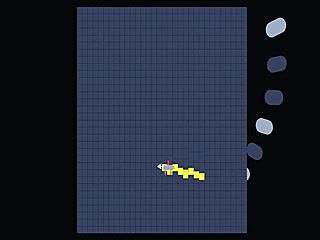
to express ourselves and communicate.
Sometimes the definition is for other people and sometimes it's just for you.
The definition that you use tells us something about you.
Personally, I like to use definitions very loosely.
But what about you? What definitions do you use?
I'm going to be.
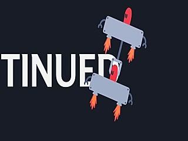
I'm going to be.